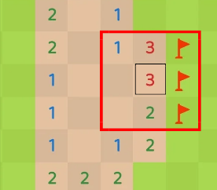

Sempre que ver um 3 colado em uma única parede, tanto faz se tá em cima, em baixo, ou do lado,
se ele estiver encostando em uma só parede, pode marcar os 3 quadrados que estão encostando nele,
já que vão ser os únicos quadrados que estarão dentro do raio de 8 quadrados dele